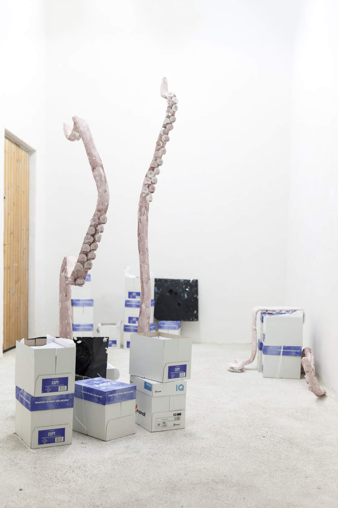
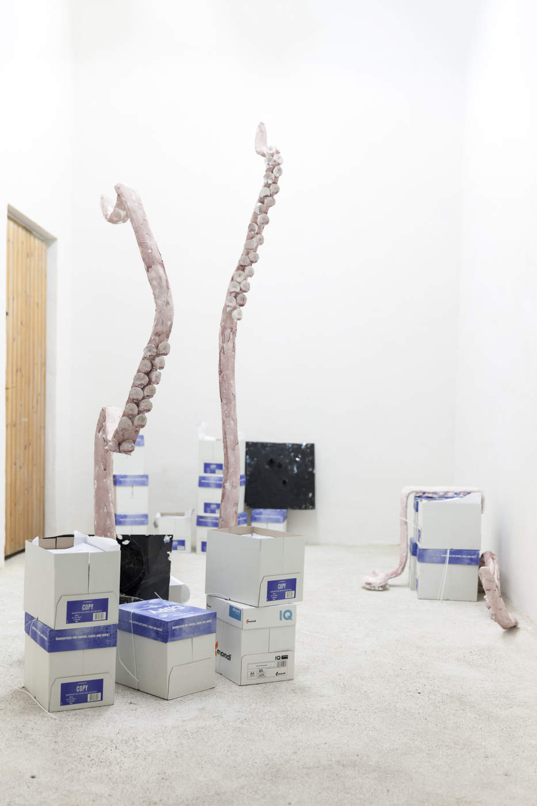

Philip Pichler - Tinte
17th – 23rd October, 2016
"Fabulant" Eva said when she saw the objects a few days ago.
Friends wrote down their adventure tales for me and these are their travel companions.
with Tenzing Barshee, Sho Hasegawa, Philipp Köster, Mariko Minoguchi, Sarah Octobre, Rebekka Seubert
invited by Eugen Wist
Readers: Julia Znoj, Yuri Minoguchi, Philip Pichler
Photos: Philipp Friedrich


 



--:--
--:--